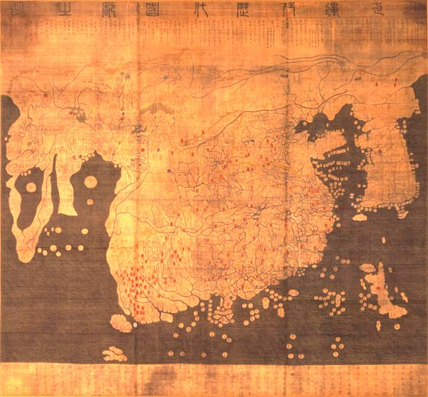
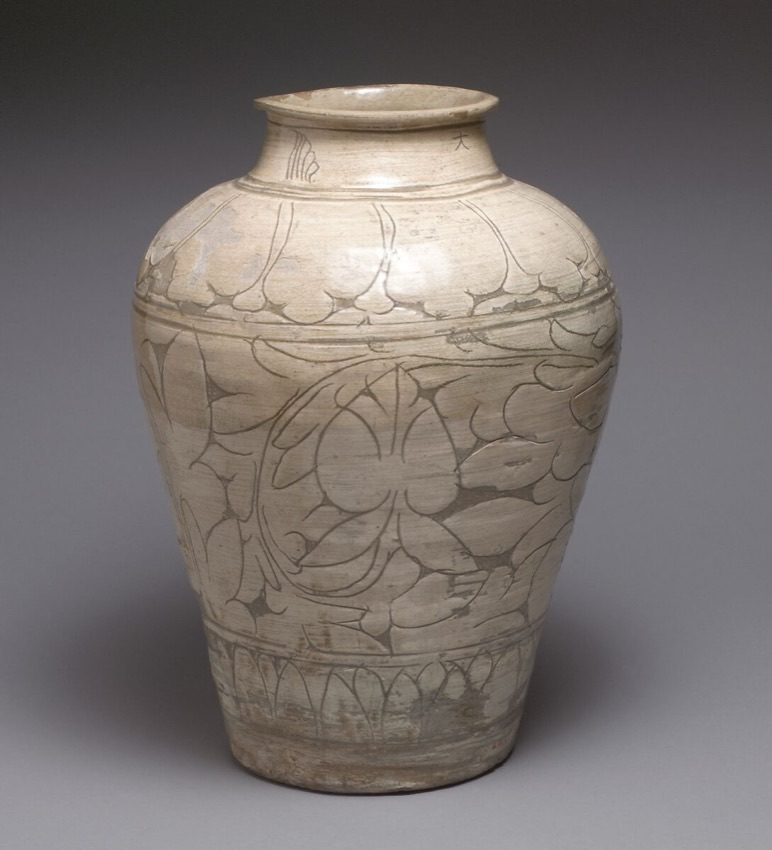
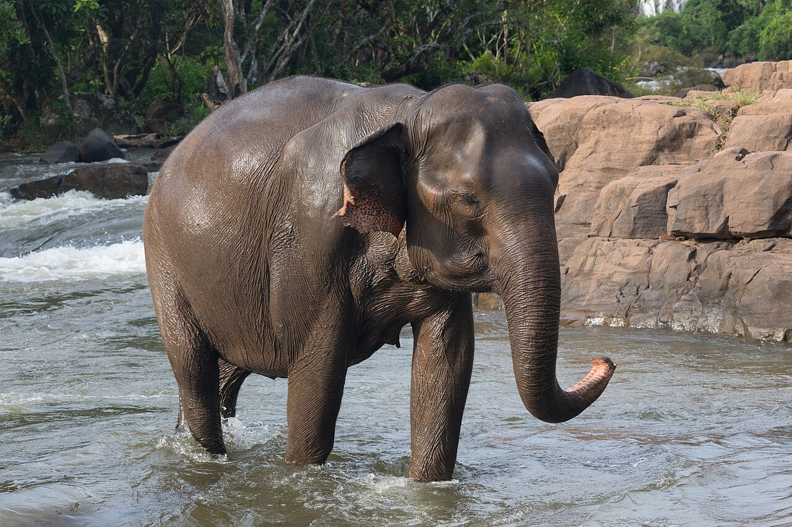
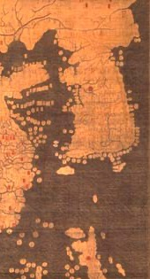
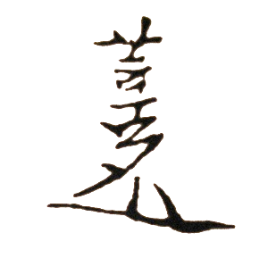
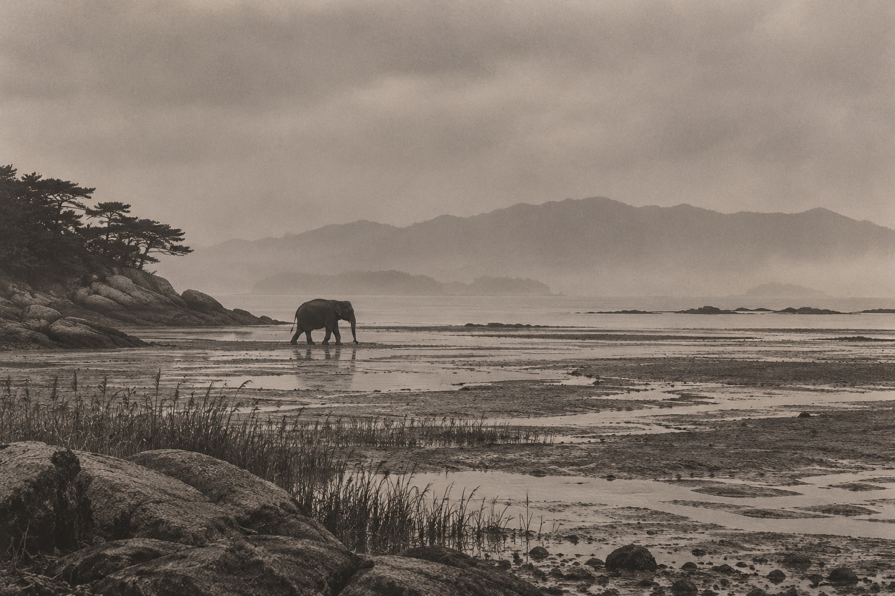

1411—1421
조선에서 귀양 간코끼리
조선 태종은 일본에서 선물로 받은 코끼리를 전라도의 섬으로 귀양 보냈다.


선물이 도착했는데,
매일 콩이 들었습니다
4–5말하루에 먹은 콩

15세기 말 · 전라도
1411년, 일본에서 온 사신이 태종에게 길들인 코끼리 한 마리를 바쳤습니다. 실록을 쓴 사람은 이 동물을 소개하면서 조선에 일찍이 없었던 짐승이라고 적었어요. 태종은 왕실의 말을 관리하던 사복시에 코끼리를 맡겼습니다.
그날 기록은 코끼리의 생김새가 어땠는지보다, 맡은 사람들이 당장 알아야 했을 숫자로 끝납니다. 날마다 콩 네댓 말이 들었습니다. 멀리서 온 귀한 선물 하나가 누군가에게는 내일도 모레도 먹이를 마련해야 하는 일이 된 셈이죠.
코끼리 구경을 갔다가


이듬해, 공조에서 벼슬을 지냈던 이우라는 사람이 코끼리를 보러 갔습니다. 기이한 짐승이 있다는 말을 듣고 찾아갔다고 해요. 실록에는 이우가 코끼리의 생김새를 비웃고 침을 뱉었으며, 코끼리가 그를 밟아 죽였다고 적혀 있습니다.
그 뒤 병조판서 유정현이 코끼리를 어떻게 처리할지 태종에게 건의했습니다. 실록에 적힌 말을 오늘날 말투로 옮기면 이렇습니다.
“전하, 사람을 해쳤고 한 해 먹는 콩만 수백 석입니다. 전라도의 섬에 두는 게 어떻겠습니까?”

태종은 웃으며 그 말을 따랐다고 합니다. 왜 웃었는지는 기록에 없어요. 코끼리는 전라도 순천부에 속한 섬, 장도에 풀어놓아 기르게 됐습니다.

“사람을 보면
눈물을 흘립니다.”
사람을 보면 눈물을 흘린다고 했습니다
이듬해 봄, 전라도 관찰사가 장도 소식을 전했습니다. 코끼리가 물풀을 먹지 않아 날로 야위고, 사람을 보면 눈물을 흘린다는 보고였어요. 조정에서 코끼리를 섬으로 보낼 때는 먹이와 인명 피해를 따졌는데, 섬에서 돌아온 보고에는 코끼리의 눈물이 적혀 있었습니다.
태종은 그 말을 듣고 코끼리를 가엾게 여겼습니다. 육지로 내보내 예전처럼 기르라고 했어요.
이번에는 세 고을이 아니라 세 도가 나섰습니다
세종 때가 되자 코끼리의 먹이 문제가 다시 실록에 나옵니다. 전라도에서는 이미 네 곳이 돌아가며 코끼리를 기르고 있었어요. 전라도 관찰사는 백성들이 감당하기 어렵다며 충청도와 경상도도 번갈아 맡게 해달라고 청했습니다. 그때는 왕위를 세종에게 넘긴 태종이 상왕으로 있었고, 이 건의를 받아들인 사람도 태종이었습니다.
1421년, 충청도 공주에서 코끼리를 돌보던 사람이 코끼리 발에 채여 목숨을 잃었습니다. 충청도 관찰사는 이번에도 섬의 목장에 풀어놓자고 했어요. 세종이 내린 지시에는 조건이 하나 붙었습니다. 물과 풀이 좋은 곳을 골라, 병들어 죽지 않게 하라는 것이었습니다.
충청도 관찰사의 보고에는 하루치 먹이도 나옵니다. 쌀 두 말과 콩 한 말이 들었다고 해요.
조선에 처음 들어온 날에는 하루치 콩의 양까지 적어둔 실록이, 이 지시 뒤에는 코끼리 소식을 전하지 않습니다.
참고 자료와 이미지 출처
- 《태종실록》 코끼리가 조선에 온 날
- 《태종실록》 이우의 죽음
- 《태종실록》 코끼리를 섬으로 보내자는 건의
- 《태종실록》 장도에서 올라온 보고
- 《세종실록》 코끼리 순번 사육 건의
- 《세종실록》 공주에서 올라온 보고
- 아시아코끼리 사진 · Skip Brown, Smithsonian’s National Zoo · 원본 · CC0 1.0 · 색·명암 조정 및 부분 확대
- 아시아코끼리 눈 사진 · Alexander Klink 촬영, Lycaon 크롭 · 원본 · CC BY 3.0 · 이 페이지에서 크롭·명암 조정
- 라오스의 아시아코끼리 사진 · Basile Morin · 원본 · CC BY-SA 4.0 · 이 페이지에서 크롭·색 조정
- 분청사기 박지 모란 무늬 항아리 · 메트로폴리탄 미술관, Rogers Fund, 1916 · Public Domain · 배경 제거
- 혼일강리역대국도지도 · 1402년 조선에서 제작한 지도의 후대 사본 · Public Domain · 부분 확대
- 《태종실록》 26권 37장 앞면 · 태백산사고본 · 국사편찬위원회 · 공공누리 출처표시 · 부분 확대
- 태종의 수결 · Public Domain · 부분 확대
- 장도 지면의 갯벌 장면 · 역사적 사진 자료와 구별되는 삽화